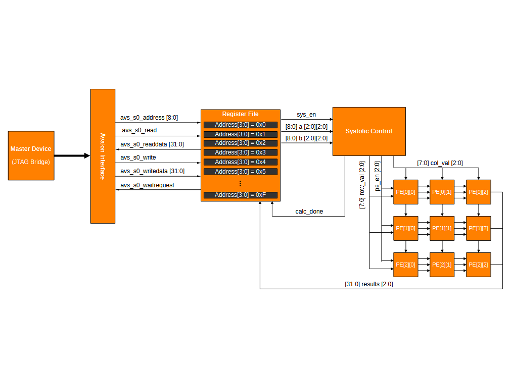
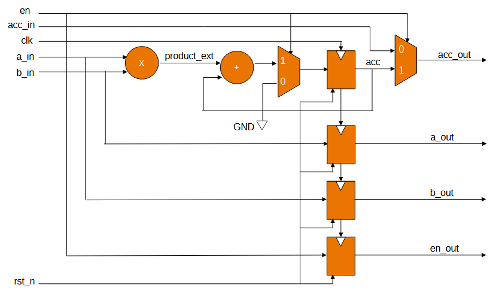
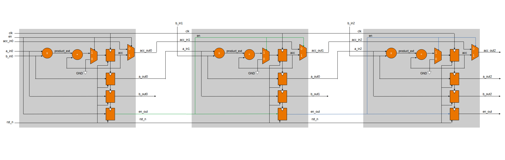
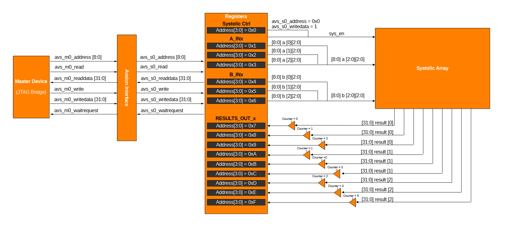
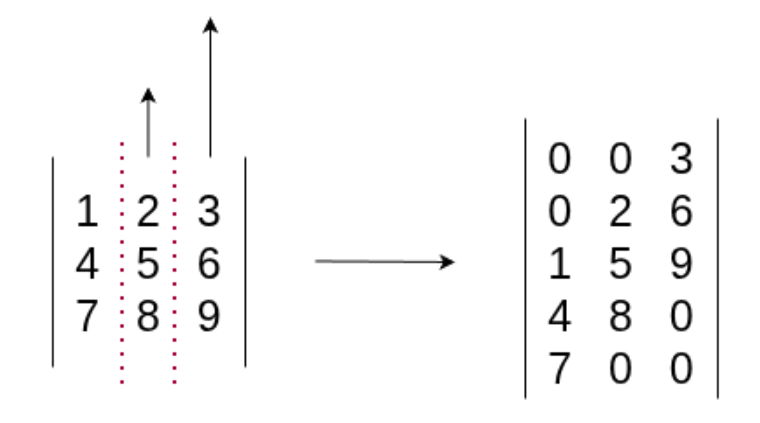
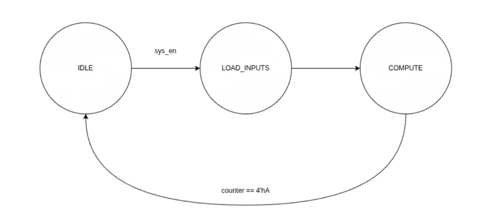
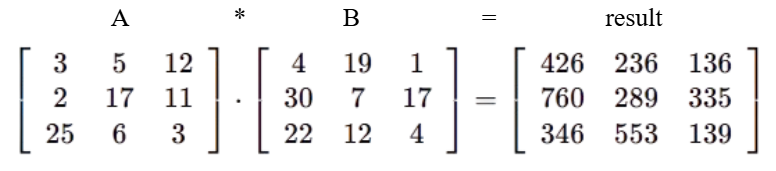
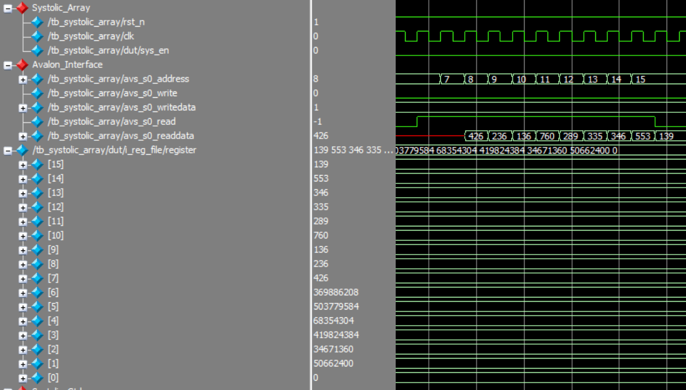

Systolic arrays are composed of individual processing elements (PEs) each with their own multiplier and accumulator.
These elements are connected together in a lattice structure so that the input of one core is fed to the input of an adjacent core. This architecture is highly pipelined and parallelized so that it is
suitable for large volume multiply and accumulate based computing. This project focuses on the matrix multiplication capabilities of a systolic array. The following animation demonstrates the system in action: 
This system utilizes the Altera Avalon Memory Mapped (MM) Interface for data IO, and includes a register bank
to store incoming and outgoing data. The systolic control module orchestrates data feeding into the PE lattice structure, and manages system cycle timing. Below is the high-level diagram (HDL) for the 3x3 systolic array.
The Processing Element (PE) performs multiply and accumulate (MAC) operations on the input data: a_in and b_in. During operation the core passes a_in and b_in to adjacent cores and will feed its own accumulated value or the accumulated value left adjacent core. Below is a gate level diagram detailing the structure of a single PE core. The subsequent image demonstrates connected 3 PE cores which create a single row of the systolic array.


The Processing Element (PE) may either be operating in one of two accumulator passthrough modes: Transparent or Opaque. The core is run in transparent mode
when calculating the matrix multiplication for its respective cell. When the core has finished the calculation or is idle, it is run in opaque mode.
Transparent mode : Upon receiving the enable signal, the PE core performs its own multiply and accumulate (MAC) operation once per clock cycle,
and passes the finished sum of the core to its left to the core to its right. In this phase, the core can be categorized as “transparent”.
Opaque mode : Once the enable signal is set low, the PE core stops performing its own multiply and accumulate (MAC) operations, and passes its own value to the right - ignoring
the core to the left. In this phase, the core can be categorized as “opaque”.
This system includes 16 32-bit registers to store input and output data. The Avalon interface is used to access each register bank. The first address 0x0 relates to the SYSTOLIC_CTRL register which is used to signal that data input has been successful and that calculation should begin. Addresses 0x1 to 0x6 store the entries of each row of the input matricies. Each row entry is allocated 8-bits. The following 9 register banks store the result of each individual cell: each result is allocated 32-bits since the output of a matrix multiplication operation is often quite large. The following is the HDL for the registers.

The systolic control module takes the matrix values stored within the registers and schedules the data flow for the PE cores. The first column has two zeros appened to the end,
the second has a zero appended to the front and end, and the final column has two zeros appeneded to the start. This skewed data is fed into the b_in inputs of the topmost cores.
A visualization of the data skew is seen below.

In addition to scheduling and feeding the data into the PE lattice, the system tracks the current computation cycle. On the 4th compute cycle the systolic control asserts calc_out to signal
the start of return data. During this cycle, the top leftmost core has finished its MAC operation and is passing its final result out. On the next cycle, the two adjacent cores return their accumulated values
and so on, until the last core (bottom right) has output its response. After one cycle calc_out is deasserted, as all data has been output.

The Avalon Interface consists of 6 buses: address, read, readdata, write, writedata, waitrequest. read and write, are single bit control signals determining if the master will be reading or writing to the register.

After 6 cycles the registers are populated with the rows of both the A and B matricies. The systolic array is activated on the following cycle. The systolic control module resets the internal counter and skews the data for operation. On the 9th cycle the '3' from matrix A and '4' from matrix B are fed into the first PE core (top left). On the following cycle, the '3' and '4' are passed to adjacent cores: top middle and middle left respectively. '2' and '5' from matrix A and '30' and '19' from matrix B are fed into their respective cores. After 3 more cycles the first output '426' from the top left PE core is returned. After 4 additional cycles the last value '139' is returned from bottom right core. A more in-depth analysis can be found in the MAS. Data return from the PE lattice is exemplified below:

Below is a link to the offical Microarchitectural Specification (MAS) document which includes additional information about each system.